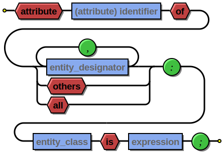

Syntrax¶
Syntrax is a railroad diagram generator. It creates a visual illustration of the grammar used for programming languages. A specification file describes the syntax as a hierarchy of basic elements. This is processed into an image representing the same syntax with interconnected nodes.
The specification is a set of nested Python function calls:
indentstack(10,
line(opt('-'), choice('0', line('1-9', loop(None, '0-9'))),
opt('.', loop('0-9', None))),
line(opt(choice('e', 'E'), choice(None, '+', '-'), loop('0-9', None)))
)
This is processed by Syntrax to generate an SVG image:

JSON number syntax
Syntrax can render to PNG bitmap images or SVG, PDF, PS, and EPS vector images. The SVG output can have hyperlinked text allowing users to quickly navigate to documentation of different syntax elements.
Syntrax is a heavily modified version of the railroad diagram generator used for the SQLite documentation. The generator has been ported to Python, converted to use the Cairo rendering backend, and enhanced with configurable layout options.
Requirements¶
Syntrax requires either Python 2.7 or Python 3.x, Pycairo, and Pango.
The installation script depends on setuptools which will be installed if it isn’t currently present in your Python distribution. The source is written in Python 2.7 syntax but will convert cleanly to Python 3 when the installer passes it through 2to3.
The Pango library is used compute the dimensions of a text layout. There is no standard package to get the Pango Python bindings installed. It is a part of the Gtk+ library which is accessed either through the PyGtk or PyGObject APIs, both of which are supported by Syntrax. You should make sure that one of these libraries is available before installing Syntrax. A Windows installer is available. For Linux distributions you should install the relevant libraries with your package manager.
Licensing¶
Syntrax is licensed for free commercial and non-commercial use under the terms of the MIT license.
Download¶
You can access the Syntrax Git repository from Github. You can install direct from PyPI with the “pip” command if you have it available.
Installation¶
Syntrax is a Python application. You must have Python installed first to use it. Most modern Linux distributions and OS/X have it available by default. There are a number of options available for Windows. If you don’t already have a favorite, I recommend getting one of the “full-stack” Python distros that are geared toward scientific computing such as Anaconda or Python(x,y).
If your OS has a package manager, it may be preferable to install Python setuptools through that tool before attempting to install Syntrax. Otherwise, the installation script will install these packages directly without registering them with the OS package manager.
The easiest way to install Syntrax is from PyPI.
> pip install --upgrade syntrax
This will download and install the latest release, upgrading if you already have it installed. If you don’t have pip you may have the easy_install command available which can be used to install pip on your system:
> easy_install pip
You can also use pip to get the latest development code from Github:
> pip install --upgrade https://github.com/kevinpt/syntrax/tarball/master
If you manually downloaded a source package or created a clone with Git you can install Syntrax with the following command run from the base Syntrax directory:
> python setup.py install
On Linux systems you may need to install with root privileges using the sudo command.
After a successful install the Syntrax command line application will be available. On Linux they should be immediately accessible from your current search path. On Windows you will need to make sure that the <Python root>\Scripts directory is in your %PATH% environment variable.
If you can’t use the installer script, it is possible to use syntrax.py directly without installation. If you need to use Python 3 you can manually convert it with the 2to3 tool:
> 2to3 -w syntrax.py
Using Syntrax¶
Syntrax is a command line tool. You pass it an input specification file and it will generate a diagram in any of the supported output formats.
usage: syntrax.py [-h] [-i INPUT] [-o OUTPUT] [-s STYLES] [--title TITLE] [-t]
[--scale SCALE] [-v] [--get-style]
Railroad diagram generator
optional arguments:
-h, --help show this help message and exit
-i INPUT, --input INPUT
Diagram spec file
-o OUTPUT, --output OUTPUT
Output file
-s STYLES, --style STYLES
Style config file
--title TITLE Diagram title
-t, --transparent Transparent background
--scale SCALE Scale image
-v, --version Syntrax version
--get-style Create default style .ini
Any argument not associated with a flag is assumed to be the input file name. The default output format is PNG.
> syntrax foo.spec
Rendering to foo.png using cairo backend
You can specify the specific out file you want with the -o option. The extension determines the format. You can also pass just the extension to -o and Syntrax will use the input file base name for the output image:
> syntrax -i foo.spec -o bar.pdf
Rendering to bar.pdf using cairo backend
> syntrax -i foo.spec -o eps
Rendering to foo.eps using cairo backend
Transparency¶
By default the images have a white background. If you want a transparent background pass the -t option.
Scaling¶
You can control the scale of the resulting image with the --scale option. It takes a floating point scale factor. This is most useful for the PNG output to increase the resolution of the image or create thumbnails with less blurring than conventional bitmap resizing.
> syntrax -i scaling.spec -o scale_small.png --scale 0.5
> syntrax -i scaling.spec -o scale_big.png --scale 2.0

Titles¶
You can include a title in the generated diagram by passing a string to the --title option. The position of the title is controlled by the title_pos entry in the styling configuration. It defaults to the top left. The title_font entry is used to style the font.
> syntrax -i titling.spec -o svg --title="Diagram with title"

Specification language¶
Syntrax diagrams are created using a Python-based specification language. A series of nestable function calls generate specific diagram elements. Nodes in the diagram are represented by quoted strings. Nodes default to rounded bubbles but will change to a box when prefixed with “/”. Note that this is the reverse of how the original SQLite generator works. The rounded bubbles are typically used for literal tokens. Boxes are typically place holders for syntactic elements too complex to include in the current diagram. Nodes starting with a non-alphanumeric character are rendered with their own font style so that punctuation tokens can be made more distinct.
The following functions are available for creating diagrams:
| line() | loop() | toploop() |
| choice() | opt() | optx() |
| stack() | indentstack() | rightstack() |
line¶
A line() creates a series of nodes arranged horizontally from left to right.
line('[', 'foo', ',', '/bar', ']')
loop¶
A loop() represents a repeatable section of the syntax diagram. It takes two arguments. The first is the line of nodes for the forward path and the second is the nodes for the backward path. The backward path is rendered with nodes ordered from right to left.
loop(line('/forward', 'path'), line('backward', 'path'))
Either the forward or backward path can be None to represent no nodes on that portion of the loop.
loop('forward', None)
toploop¶
A toploop() is a variant of loop() that places the backward path above the forward path.
toploop(line('(', 'forward', ')'), line(')', 'backward', '('))
choice¶
The choice() element represents a branch between multiple syntax options.
choice('A', 'B', 'C')
opt¶
An opt() element specifies an optional portion of the syntax. The main path bypasses the optional portion positioned below.
opt('A', 'B', 'C')
opt() is a special case of the choice() function where the first choice is None and the remaining nodes are put into a single line for the second choice. The example above is equivalent the following:
choice(None, line('A', 'B', 'C'))
optx¶
The optx() element is a variant of opt() with the main path passing through the nodes.
optx('A', 'B', 'C')
stack¶
The elements described above will concatenate indefinitely from left to right. To break up long sections of a diagram you use the stack() element. Each of its arguments forms a separate line that is stacked from top to bottom.
stack(
line('top', 'line'),
line('bottom', 'line')
)

When an inner element of a stack argument list is an opt() or an optx() it will be rendered with a special vertical bypass.
stack(
line('A', 'B'),
opt('bypass'),
line('finish')
)

indentstack¶
For more control of the stacking you can use the indentstack() element. It shifts lower lines to the right relative to the top line of the stack. Its first argument is an integer specifing the amount of indentation.
indentstack(3,
line('top', 'line'),
line('bottom', 'line')
)

rightstack¶
The rightstack() element will right align successive lines without needing to determine the indentation.
rightstack(
line('top', 'line', 'with', 'more', 'code'),
line('bottom', 'line')
)
Styling diagrams¶
You can control the styling of the generated diagrams by passing in a style INI file with the -s option. By default Syntrax will look for a file named “syntrax.ini” in the current directory and use that if it exists. Otherwise it will fall back to its internal defaults.
You can use the --get-style option to generate a copy of the default styles in the current directory so you can quickly make modifications.
Here is the default styling:
[style]
line_width = 2
outline_width = 2
padding = 5
line_color = (0, 0, 0)
max_radius = 9
h_sep = 17
v_sep = 9
arrows = True
title_pos = 'tl'
bullet_fill = (255, 255, 255)
text_color = (0, 0, 0)
shadow = True
shadow_fill = (0, 0, 0, 127)
title_font = ('Sans', 22, 'bold')
[bubble]
pattern = '^\w'
shape = 'bubble'
text_mod = None
font = ('Sans', 14, 'bold')
text_color = (0, 0, 0)
fill = (179, 229, 252)
[box]
pattern = '^/'
shape = 'box'
text_mod = 'lambda txt: txt[1:]'
font = ('Times', 14, 'italic')
text_color = (0, 0, 0)
fill = (144, 164, 174)
[token]
pattern = '.'
shape = 'bubble'
text_mod = None
font = ('Sans', 16, 'bold')
text_color = (0, 0, 0)
fill = (179, 229, 252)

Here is the same diagram with modified styling:
[style]
line_width = 3 ; Thicker lines
outline_width = 3
padding = 5
line_color = (0, 0, 0)
max_radius = 29 ; Larger radii
h_sep = 17
v_sep = 9
arrows = False ; Remove arrows
title_pos = 'tl'
bullet_fill = 'yellow' ; Requires optional webcolors package to be installed
text_color = (0, 0, 0)
shadow = True
shadow_fill = (0, 0, 0, 127)
title_font = ('Sans', 22, 'bold')
[hex_bubble] ; User-defined style name
pattern = '^\w'
shape = 'hex' ; Hexagon shape for node
font = ('Sans', 14, 'bold')
fill = (255,0,0,127) ; Alpha component for transparent fills
[box]
pattern = '^/'
shape = 'box'
text_mod = 'lambda txt: txt[1:]'
font = ('Sans', 14, 'bold')
text_color = (100, 100, 100)
fill = '#88AAEE'
[token]
pattern = '.'
shape = 'bubble'
font = ('Times', 16, 'italic')
fill = (0,255,0,127)
The style configuration file has a main section named “[style]” followed by user-defined sections for various node types. The node style is chosen based on a regex pattern applied to the text. The first matched pattern sets the style for a node. Patterns are tested in the same order they appear in the configuration file. The first node style is used by default if no pattern matched the text.
The [style] section contains the following keys:
line_width
Connecting line width in pixels. Default is 2.outline_width
Node outline width in pixels. Default is 2.padding
Additional padding around each edge of the image in pixels. Default is 5.line_color
Color of the connecting lines and node outlines. Default is (0,0,0) Black.max_radius
Maximum radius for turnbacks on loops and stacked connections.h_sep
Horizontal separation between nodes.v_sep
Vertical separation between line elements.arrows
Boolean used to control rendering of line arrows. Default is True.title_pos
Position of the title text. String containing one of ‘left’, ‘center’, or ‘right’ for horizontal position and ‘top’ or ‘bottom’ for vertical. These can be abbreviated as ‘l’, ‘c’, ‘r’, ‘t’, and ‘b’. Other characters are ignored. Examples are ‘top-left’, ‘bottom center’, ‘cr’, and ‘rt’.bullet_fill
Fill color for small bullets at start and end of the diagram.text_color
Default color of all text. Can be overridden with text_color in a node style sectionshadow
Boolean controlling the rendering of node shadows. Default is True.shadow_fill
Fill color for shadows.title_font
Font for image title.
Node styles¶
Nodes are styled with a user-defined section name. The built-in sections are [bubble] for tokens that start with an alphanumeric character, [box] for symbols drawn with a boxed outline, and [token] for tokens that consist of a single punctuation character. You are not limited to these three node styles. Any number of node types can be defined provided they have distinct patterns to match against the node text in your specification file.
The node sections contain the following keys:
pattern
A regex pattern to match the node text to a style.shape
Node outline shape. Must be “bubble”, “box”, or “hex”.text_mod
Optional lambda expression for transforming text from the specification into the output diagram. This allows you to include additional characters to match against to select the node type and then remove them from the final diagram. It takes the node text string as a single argument and returns the modified text.font
Font style for the node.text_color
Optional font color for the node. If omitted, the text_color from the [style] section is used.fill
Shape fill color for the node.
Note
The text_mod value is passed through eval() to create an executable code object. This is a potential security hole if an untrusted user is allowed to control the style settings file.
Colors¶
The various keys controlling coloration can use a variety of color formats. The primary color representation is a 3 or 4-tuple representing RGB or RGBA channels. All channels are an integer ranging from 0 to 255. You can also specify RGB colors as a hex string. If you have the optional webcolors package installed you can use color names as a value.
; Supported color formats:
(255,100,0) ; RGB
(255,100,0,100) ; RGBA
'#AABBCC' ; Hex string
'red' ; Named web color (with optional package)
Fonts¶
Fonts are specified as a tuple of three items in the following order:
- Font family (Helvetica, Times, Courier, etc.)
- Point size (12, 14, 16, etc.)
- Style (‘normal’, ‘bold’, ‘italic’)
title_font = ('Helvetica', 14, 'bold')
Hyperlinked SVG¶
SVG images can have hyperlinked node text. This is implemented by adding a url_map dictionary after the diagram specification. The keys of the dictionary are the text identifying the node and their values are the URL for the link. The text key should not include any leading “/” character for the box nodes.
stack(
line('attribute', '/(attribute) identifier', 'of'),
line(choice(toploop('/entity_designator', ','), 'others', 'all'), ':'),
line('/entity_class', 'is', '/expression', ';')
)
url_map = {
'entity_class': 'https://www.google.com/#q=vhdl+entity+class',
'(attribute) identifier': 'http://en.wikipedia.com/wiki/VHDL'
}
Current browser policies lump SVG hyperlinks together with embedded Javascript. Because of this they do not support hyperlinks when an SVG is referenced through an HTML <img> tag. To get functional links on a web page you must use an <object> tag instead:
<object type="image/svg+xml" data="path/to/your.svg"></object>